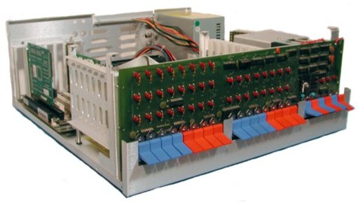

Course Introduction¶
Read time: 32 minutes (8166 words)
In this course, we will study how your machine works. You should already have some idea about what happens when your program runs, but most students build a mental model of the machine that, at most, includes a chunk of hardware doing the processing work, and a big pile of memory holding all the code and data we process. That is about as far as your mental model needs to go to get you into programming.
But, just like studying the inner workings of your car better prepares you to deal with life’s funny mechanical problems, studying the insides of the computer will make you a better programmer.
For that reason, we will look deep inside the machine and see what really happens. There is no magic involved, just electricity moving around at a fierce rate making simple things happen. By the time you get out of this course, I hope you have a better understanding of how these crazy machines actually do their work, and how that work helps us poor humans!
Getting to Know the Machine¶
We are going to meet the machine on a very personal level. The machine speaks a strange language, and we need to learn that language before we can “speak” to it.
Well, actually, we will not spend too much time working with the machine at its most basic level, that level is too hard for us humans to deal with. Instead, we will move up one step higher, where the language is better suited for programmers.
The machine’s real language is called (oddly enough) machine language. That language is very simple. You have probably all heard this by now:
Everything in the machine is 0's and 1's!
Note
Actually, that is not true. Everything in the machine is an electrical signal of some sort, measured as a voltage that we humans interpret as 0’s and 1’s! We will learn more about that later.
In fact, machine language is all 0’s and 1’s. Hardly a friendly place to live. Speaking to the machine at this level is a real challenge. But, we are programmers, and we like to solve problems like this!
Here is the first computer I got my hands on that I could work on at home. It was built up out of a $400 kit in 1975!
I actually toggled in programs on that front panel, flipping switches up or down to enter 0’s or 1’s. Painful, but kind of fun in an odd way!
Instructions¶
The manufacturer of any machine constructs it so it can perform a limited set of basic tricks. Each trick manipulates a bunch of 0’s and 1’s that we call data. That data is located somewhere inside the machine, in a place we call the system memory. Each trick is simple, and we call that trick an instruction.
Operands¶
An instruction might need a few additional pieces of data to work with. We will call these extra data items operands. Those operands usually tell the processor where the real target data that it needs to manipulated with this particular instruction is located. In some cases, an operand might just be a number of some sort.
You have used all of these concepts in your previous programming. Nothing new is going on here. But one line of high-level C++ code might end up being implemented as a dozen or so instructions for a real machine.
Humanizing Instructions¶
Each instruction, and its required operands, is just a unique pile of 0’s and 1’s that the machine understands. But we humans cannot work at this level. (At least we do not want to work at this level!)
Just for fun, take a look at the first program I loaded into that INSAI-8080
computer back in 1975:
0000000000000000: 11000011 0000000000000000
Ridiculous! But it is a real program, and is just enough of a program to prove that this brand new machine was functional. Let’s change the notation.
What you see above is pure binary, only 0’s and 1’ are used. The first part (before the colon) is the address in memory where this program lives. The rest is a single instruction for the Intel 8080 microprocessor. What it does should be clear, right?
No way!
Let’s change it to a different notation, one we will learn about later:
Hexadecimal!
0000: c3 0000
Sure is shorter, but still not very easy to understand.
Next, we introduce assembly language notation for this chip:
0000: JMP 0000
Now we are getting somewhere. I finally have some clue about what is going on. The JMP looks like something I might understand. But what is JMP, anyway? Why did they not spell it right: JUMP?
Note
Because programmers are lazy and hate to type! So they dropped a letter to make is shorter. Get used to that, it happens all the time in programming!
One more step and we are done. Assembly Language lets you do away with hard-coded addresses, and use label as markers for a point in memory. This is the code I actually wanted to run:
; test program for IMSAI 8080
ORG 0000
start: JMP start
Not so bad now. We have humanized the machines language! The ORG line tells us where this particular piece of code should be placed in the instruction memory of the computer when we run the program. The next line is the actual instruction.
Do you see what it will do? It should be fairly simple to figure out.
The machine normally works its way through a series of instructions, all located in sequential locations in memory. However, this instruction tells the machine to move to a specific location and run the instruction found there We marked the place we want to go with the label Start, and we jumped to that location when we processed this one instruction. What happens =next? Exactly the same thing.
Welcome to the infinite loop of assembly language. The machine is very busy, it just is not doing much useful work!
So, what we have done, when we move to assembly language, is simple. We come up with a unique code name for each instruction. We call that code name a mnemonic. The mnemonic is usually very short, and most often is suggested by the manufacturer of the machine. If we choose to work at this level, we need to build a tool that can translate our new language, made up of mnemonics and operands, into the required pile of 0’s and 1’s we can somehow load into the memory of our machine. We call this new language assembly language, and we call the tool we need and assembler.
Exactly how all of that happens is done is something we will cover in the course. For now we need to know one more thing.
Assembly Language is not Mandatory¶
Just because the manufacturer of a machine suggests a set of mnemonics for this machine, there is no law that says we can not just invent mnemonics we like better, and use those instead. Of course, we need to build an assembler that recognizes our new language, and converts that new language into the right set of ‘s and 1’s. In fact, we will be building our own machine as part of this course, and we will be designing an assembly language for that machine. This is not especially hard, but it requires a new kind of programming, and learning that will definitely improve your coding skills!
How will we create Assembly Language?¶
If we are learning a new language, tradition (or is it the programming gods?) says we have to start by printing “Hello World” on the console screen. We could do that now, but we have a big problem to face first! Let’s do that now, and get it out of the way.
Hello, World!¶
To start, we might want to fire up our favorite IDE and start typing!
Wait! This language is not supported by your IDE. Now what?
Since I have no control over what machine/operating system you choose to use, I am going to normalize things by having everyone work in Linux.
But Wait! I don't know Linux!
You should, and it is not as hard as you might think.
Moving to Linux¶
We are going to work in Linux for this course, on a Virtual Machine!
We will set that up in our next meeting. For now, you need to make sure your system is up to this task.
You need a relatively new machine that looks like this:
- 64-bit processor (32-bit if necessary)
- At least 4GB of RAM
- At least 20GB of free disk space.
To make sure your processor can do the job, you need to run this program on your PC. (Macs and Linux systems are exempt from this check):
If this program certifies that you can install a 64-bit VM on your machine, you still may need to make changes in your BIOS setup. We will go over that in class as well.
Note
If your system cannot run a virtual machine, you will need to see me. Either you will need to work on a class lab machine, or on a server (in the “cloud”) I can set up for your use.
Once you have your machine set up to use a virtual machine, you are ready to set one up. Since a huge amount of the Internet is actually running on this kind of system, it is time you learned how to use one!